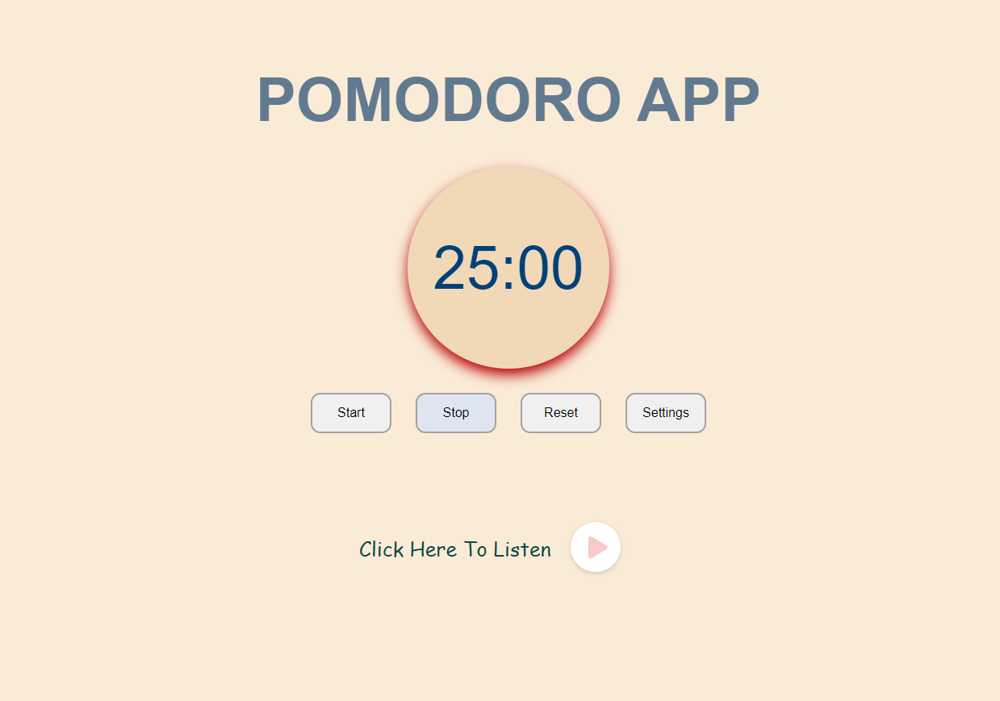
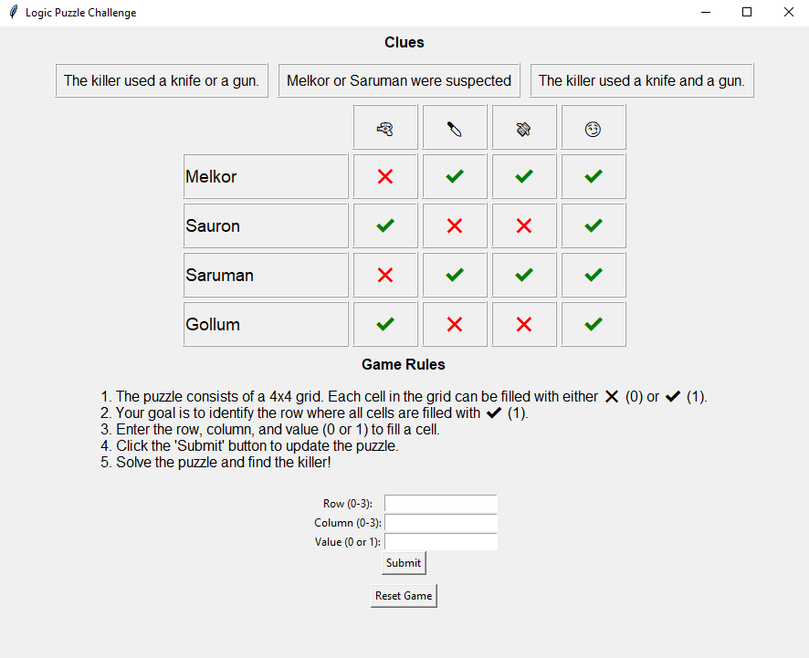
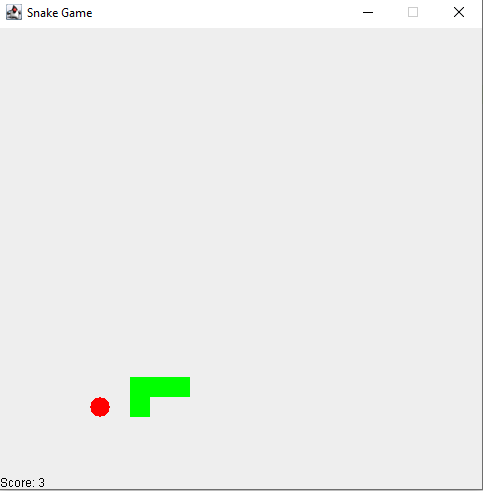
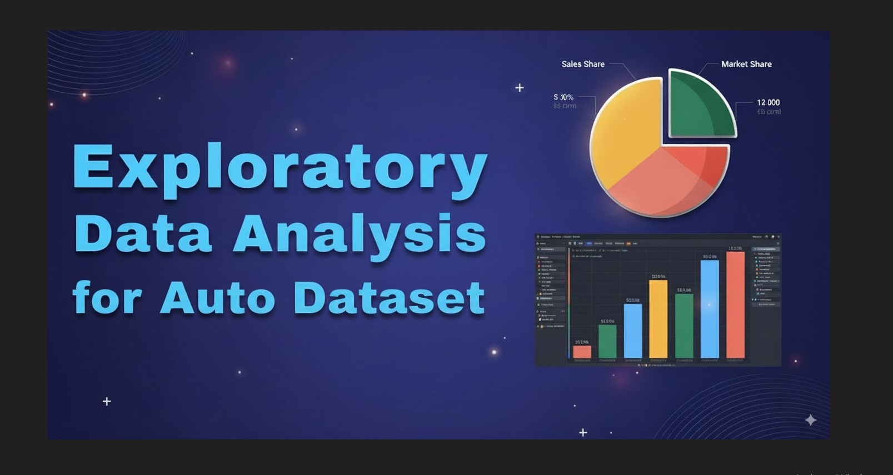

Browse My
Projects
Pomodoro Web Application
Made with:


The Pomodoro App is a web-based timer designed to boost productivity by using the Pomodoro Technique. It features customizable timer settings, background music options, and a user-friendly interface. This project demonstrates skills in HTML, CSS, and JavaScript.

Discrete Logic Puzzle Game
Made with:

Developed logic puzzle game using Python’s ‘tkinter’ library and discrete math concept, showcasing proficiency in GUI development. Implemented game logic functions for puzzle generation, checking rows and interactive puzzle display. Designed an engaging user interface with input validation, error handling, and a reset feature, demonstrating a keen on user experience.

Snake Game
Made with:

Developed a Snake Game using Java Swing. The game features a snake that navigates a 500x500 pixel grid, consuming randomly placed fruits to grow in length. Player controls are implemented using arrow keys, with real-time updates and interactions handled through KeyListeners and Timers. The game includes score tracking, collision detection, and a game-over feature, demonstrating strong skills in event-driven programming and graphical user interface design.

Exploratory Data Analysis
Made with:
Analyzed auto dataset using Python’s libraries such as matplotlib, statistics, and csv for data cleaning and statistical analysis. Identified and managed outliers, generated correlation plots, and conducted Pearson correlation for key metrics. Developed an efficiency assessment function and effectively communicated insightsthrough data visualization.
